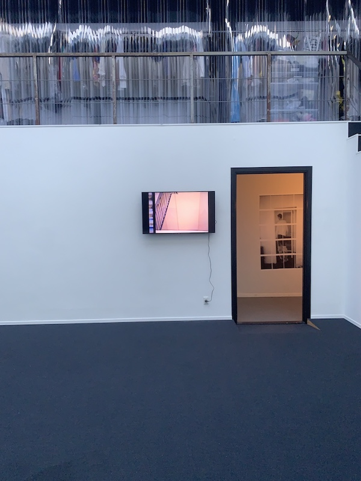
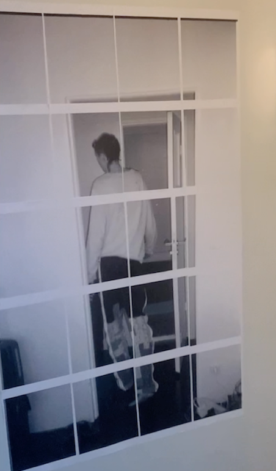

how leisure always imitates labor
Kunstverein München, 2023
Performance and installation with music score conceived by Jan Kunkel, Vera Karlsson, and Alie O.
The performance exemplarily uses the instituted properties of marriage to glance at its attempt to
decorate labor as leisure in the name of (possessive) love and (naturalized) mirages of the “self.”
As a public park, the Hofgarten conveys a popular scene for wedding photography. It is therefore
often utilized as a stage to enact the holy union of wedlock, ensuring sentimental documentation
and material perpetuation. Couples and their entourage overextend this scene until finally leaving
it emptied.
Shells, fountains, and pleasure houses are symbols of the baroque architecture in the Hofgarten.
Focusing on this historical continuation, the piece re-appropriates the garden as a scenery for the
German tragic drama or Trauerspiel. It intently suspends modes of establishing and relinquishing
the genre, remaining concerned with a shared un-realization of opulent violence as a form of
(dis)possession. The figures of the Trauerspiel exhaust and overcome themselves in the final scene:
from reenacting twosomes to self-abolition. how leisure always imitates labor thus examines
performance as spectacle, disorganization, and collapse.
(words by Jan Kunkel)
(video edit Vera Karlsson)
Keywork at bbberlin , 2022
The video, 'Unless useless' follows a fractured ‘everyday’ psycological narrativ taking place in a
made-up universe where all visible human labour have been replaced by automated machines and a
sense of purpose seams detached. The protagonist has given up which in itself evokes a sense of
agency. Each still in the video can be distributed and sold as a unique inkjet poster with added doodles by Vera.
Together the posters creates a puzzle and a shared whole between shareholders.
In the hallway, 7 inkjet prints from Veras notes, edited with pen and doddles.


Keyworks at Red Tracy 2022.
Through doors becoming the walls
20 inkjet prints on A4 on wall and 04:51 min video with sound.
Following the exhibition Keywork with the video 'Unless useless' opening one week prior at bbberlin.
The photographs that constitutes the video are taken in the fire exit staircase and basement of the same
housing building as Unless Useless. Each photo can be distributed and sold as unique inkjet posters
with added doodles by Vera. Together the posters creates a puzzle and a shared whole between shareholders.
walkthrough video documentation
 Amputated formats, 2023,
Amputated formats, 2023,
The collage book is made with photos that also appear in 'Through doors becoming the wall' (2022) taken in the staircase
fire exit of a housing building.
The fractured 'poetic' text leads a monologue about the potental of friendship and corruption.
A pdf of the work can be requested.
Live recording from Between: The Secret of Futility
[...] The supporting acts are united by their formative encounters with Bruce Gilbert’s music.
Vera (Karlsson) are a visual artist and musician making ‘abruptions’ on the London-Berlin continuum,
via Frankfurt. They have played everywhere along the way, sometimes as Vanessa Cognizance,
Hunterc44t (with Still House Plants’ Finlay Clark), or Dana Rosa. They are also a regular contributor
to recent intercontinental club night of note, The Ladies Club (TLC23) [...]
 Dana Rosa ep
Dana Rosa ep
The first release from collaborators Vera Karlsson and
Finlay Clark (Still House Plants), Dana Rosa melds together a
smeared and multi-directional cauldron of soulful drone, whispers of
the heart, ear-splitting bedroom-angst, meandering electronics and
playful percussive textures made by dragging the mic around the
studio.
It was a shared studio in south London. The glass ceiling drank in
the sunlight and held its heavy pregnant body suspended, buoyant,
in the air. There were gaps in the broken bricks and glass that
allowed a corporeal torrent of dried, anfractuous brambles and ivy
to dominate the airspace like blind aliens. Birds fed their young in
the nest situated amongst the drill bits. The young were soon
starved to death by the occupant cuckoo that also hatched there.
The coffee was so strong that it seemed to push the sweat out and
the heavy air held my hand like a lost child looking for someone,
anyone, in this tired and incessant oblivion.
credits
released October 8, 2021
Written and Produced by Vera Karlsson and Finlay Clark
Mastered by Amir Shoat
Fermata, 2021, a collaboration between Vera Karlsson and
Iman Mohammed. The video is a result from our meeting at Gotland film institute for a four days during
summer 2021. The work documents Iman's memores and relationship
to the iland and specfic the penincula Fårö. Gotland is also the place where I grew up and our friendship
was formed later in Stockholm. The work discuss the impliations of beloning
to a place and what that means. It ia also a portrait of Iman Mohammed,
and includes the cinema and music that inspires her work as a poet. Specificly are Lost Highway and
Cuadecuc, vampir, qouted in the film. The work also has an undertone of Ingmar Bergamns film Persona,
that aswell is set on Fårö. The title comes from Iman's second poerty collection "Fermata" (2018)
which she reads from. I filmed, edited and made the soundtrack for the work.
Music video with Julija Zaharijevic as performer, 2021
Video made on location and played live in response to Lolina's live performance at Osmosis
Kunsthaus Glarus, 2019
Globe II, 2018


Cola
 Cola at Forde, 2016
Cola at Forde, 2016
 Le bourgeois
Untitled (Knobs)
Le bourgeois
Untitled (Knobs)
Hotel Bloom Invite, 2015
Hotel Bloom at 3236rls, 2015

Hotel Bloom Poster
Catfish Guests #2:Benedict Drew - Escape Routes, 2014

 "Thank you for the love aka Who Need Gitars Anyway? aka Tal Talk" sculpture and install as three channel video, 2014
"Thank you for the love aka Who Need Gitars Anyway? aka Tal Talk" sculpture and install as three channel video, 2014
"Thank you for the love aka Who Need Gitars Anyway? aka Talk Talk"
Fuel 2013